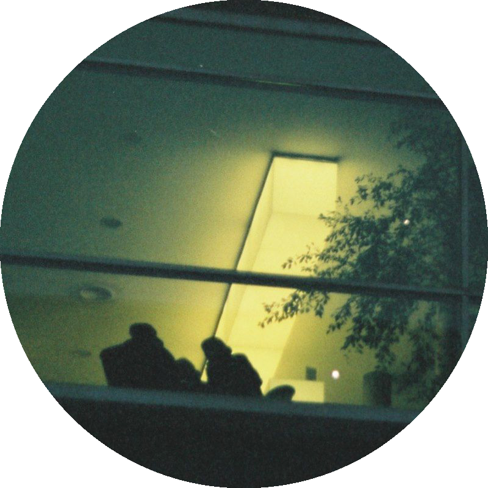
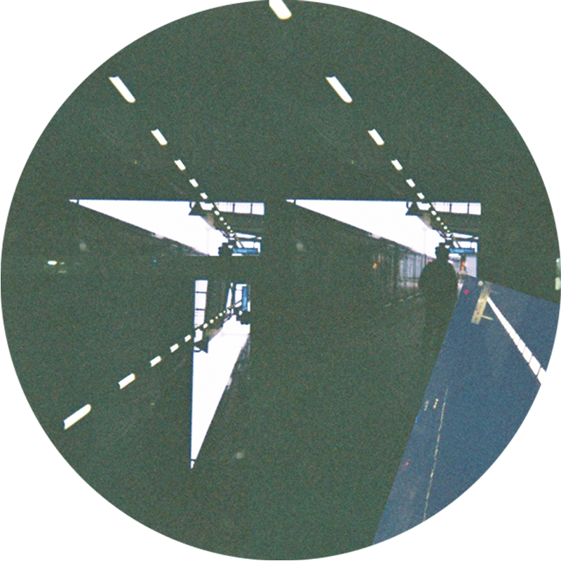
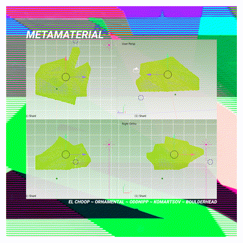
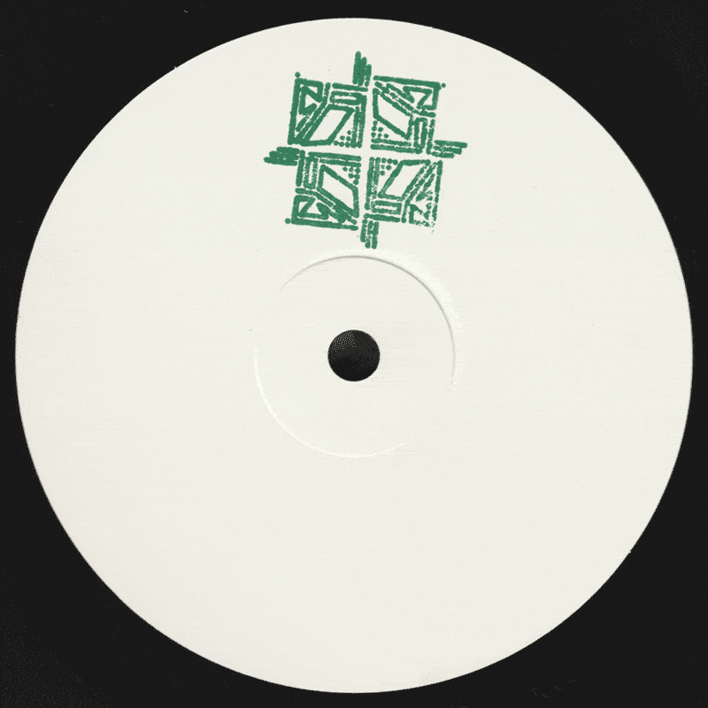
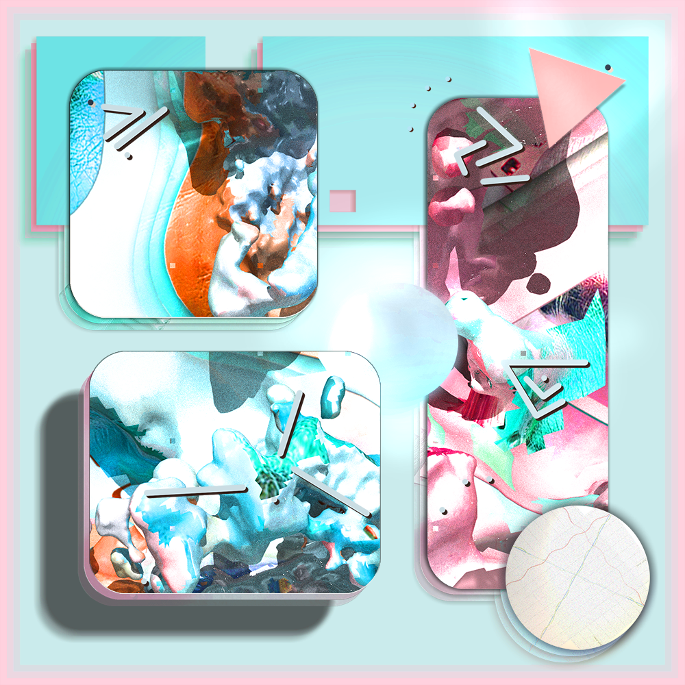
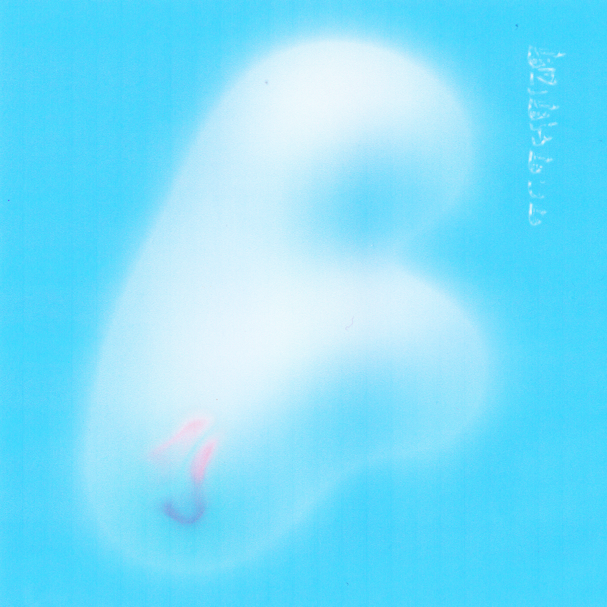

In this blend of a release we combine luscious textures with grainy ambiences that will warm up those dance floors like a hot cup of tea on a cold night. Not forgetting the splash of sweetness that makes this EP hit the spot. Tracks from Raär, Moda, Trudge and James Henry

In this blend, a various artists release with producers from four different countries curated into the perfect accompaniment for late nights or early mornings. With tracks from Moda, Raär, Akasha System and James Henry the release combines a beautiful balance of influences from ambient, lo-fi, techno and house.
Infused with minty flavors this next blend brings raw grooves, warm baselines, and uplifting melodies. Crafted with Love they make the perfect accompaniment to twilight settings, tracks supplied from Mattiik a.k.a Matt Cowell, Slim Steve, DOS and James Henry.
Mint Tea proudly presents Dansolos Jungle. Tracks sourced from the UK and Georgia crafted by producers WD41, Toke and El Choop. Within Dansolso's Jungle we first encounter a slurry of dub-techno infused with WD41's love for tape. Next we encounter Toke, based in Tbilisi he has mastered the subtitles of the dance floor developing his own unique flavour of a classic style. El Choop based in the UK has been honing his craft relentlessly since his introduction to the scene, Skeleton Crew is sure to satisfy many a dance floor.

An entity, shielded in radio silence hurtles past Earth's orbit releasing a number of data fragments. Data fragments have been encoded in a human perceivable medium intended for inter-dimensional communication with the beings of the vessel as it continues in its search for sentient life. Mint Tea presents a limited edition USB release featuring artists: El Choop, Ornamental, OddNipp, Komartsov & Boulderhead

Mint Tea proudly presents a new white label series showcasing emerging artists. MTWL001 sees Zobol with both two adaptations of his track Creeper. Creeper was made from a few vintage machines and a little FM synthesis, TR606 for drums, Roland JX3P, Volca FM, Korg MS20 and the powerhouse of the Elektron Octatrack. The music was based around the concept of growth in nature and the inevitable links this has on our psychology and behaviour.

Mint Tea returns with an incoming transmission from the long lost terraforming project by Parisian producer MiG-29. The planet's configuration was corrupted half way through the terraforming process and has led to the breeding of a highly advanced hive-mind consciousness which has now launched a series of it's node eggs into Earth orbit. We warn the public to not listen to the eggs which appear as small reflective USB.
Mint Tea presents the next edition of its VA series Basic Contact, with artists hailing from the UK, Estonia and Georgia. This VA combines tracks from Abdul Raeva, Boulderhead, Zobol and Toke.
A ton of hardware, software, technical expertise and musical flare combined with hours of practice have been funnelled into this next blend of which I thoroughly hope you enjoy. I hope it helps bring joy and love into the much needed dance floors of our post-pandemic society.

Mint Tea presents Otodojo's Parsing a Path EP, a sonic journey through a rich and floaty soundscape. Check out the accompanying web piece! Otodojo masterfully blends elements of electronic and experimental music to create their own unique sonic signature. The EP features two remixes from Boulderhead and IN2STELLAR as well as drums from Jason ddb. Whether you're dancing on the floor or relaxing on the sofa, this next minty blend is sure to satisfy.
Mint Tea is a record label based in Bristol, UK run by owner Henry James.
Launched in 2016, the label aims to evolve alongside the dance scene, taking snapshots from different perspectives.
Demos / Info: info@mintteaa.co.uk
Website designed by Boulderhead
Demo Policy
If sending demos please send as streaming links and limit to around 4 tracks.